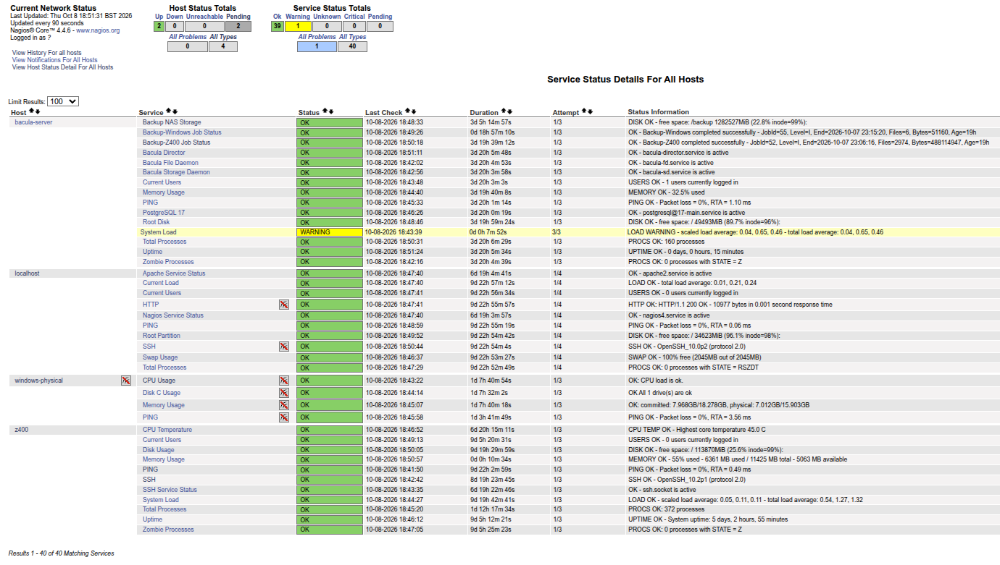
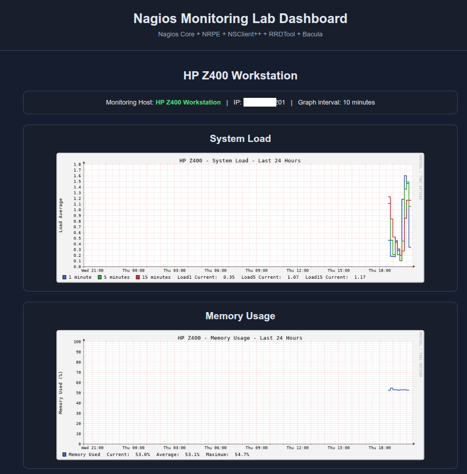
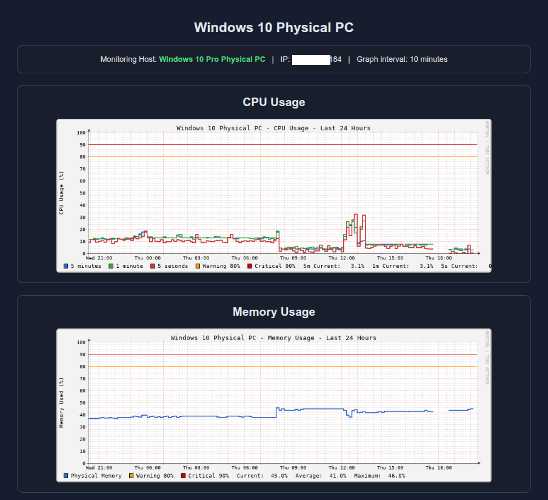
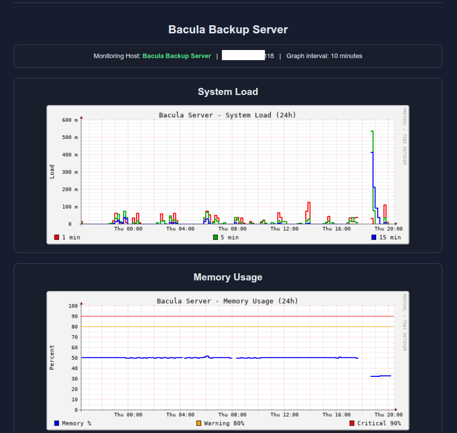
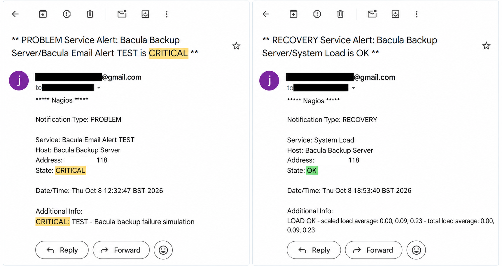

Infrastructure Monitoring | Linux & Windows | Alerting & Performance Monitoring
Designed and implemented a centralised infrastructure monitoring environment using Nagios Core on Debian Linux. The solution monitors physical and virtual systems, network connectivity, resource utilisation, critical services and Bacula backup operations.
The laboratory also includes automated email notifications, historical performance graphs and backup health monitoring.
Debian 13 Virtual Machine
Nagios Core 4.4.6
IP: 192.168.1.83
Physical Linux Workstation
NRPE Monitoring Agent
IP: 192.168.1.201
Physical Windows Workstation
NSClient++ Monitoring Agent
IP: 192.168.1.184
Debian Virtual Machine
Bacula and PostgreSQL Services
IP: 192.168.1.118
Installed and configured Nagios Core, Apache and monitoring plugins on a Debian virtual machine. Enabled CGI support to provide access to the web monitoring interface.
Configured NRPE agents and custom monitoring scripts to collect system load, memory utilisation, disk usage, uptime, process status and service availability.
Integrated a physical Windows 10 workstation to monitor connectivity, CPU utilisation, memory and disk capacity.
Developed monitoring checks for Bacula backup jobs, storage availability and essential services, including Bacula Director, Storage Daemon and PostgreSQL.
Configured Nagios Core to monitor four hosts and 40 services across Linux and Windows systems. Monitoring includes network connectivity, CPU load, memory utilisation, disk capacity, system processes, service availability and Bacula backup health.

Implemented custom NRPE checks that query the Bacula PostgreSQL catalogue to verify the status of Linux and Windows backup jobs and detect failed or overdue backups.
Developed a custom RRDTool performance monitoring dashboard with 11 historical graphs across Linux, Windows and Bacula infrastructure. Metric collection and graph generation are automated using systemd timers.
Historical system load and memory utilisation monitoring on the physical Linux workstation using Nagios Core and NRPE.

CPU and memory performance monitoring on a physical Windows 10 workstation integrated with Nagios through NSClient++.

Historical system load and memory monitoring on the Debian-based Bacula backup server, supporting infrastructure health assessment.

Configured Nagios Core to send automated email notifications through Exim4 using a Gmail SMTP smarthost. A controlled service failure was simulated using the Nagios check_dummy plugin.
Nagios detected the CRITICAL state and successfully delivered an email notification to the configured monitoring contact.
Successfully verified automated Nagios email notifications, including a simulated CRITICAL Bacula backup alert and a separate RECOVERY notification for the System Load service.

Successfully validated infrastructure monitoring, custom Bacula job checks, automated email alerts and recovery notifications.
Resolved an issue where Nagios CGI pages were downloaded instead of executed by enabling Apache CGI support and correcting the CGI paths.
Resolved duplicate command definitions, adjusted CPU load thresholds for the monitored workstation and validated remote monitoring checks.
Accounted for workstation sleep behaviour by disabling notifications for the Windows host and its services while retaining active monitoring.
Developed and validated custom Nagios checks to monitor Bacula backup jobs through the PostgreSQL catalogue. Resolved plugin configuration issues and verified the status of Linux and Windows backup jobs.
Configured Exim4 with Gmail SMTP relay and validated Nagios email notifications. Tested CRITICAL alerts using a simulated Bacula backup failure and separately verified RECOVERY notifications for System Load.
Monitoring checks were tested across Linux, Windows and Bacula infrastructure to verify host availability, service health, backup job status and email notifications.
Verified PING, SSH and NRPE connectivity. Validated CPU load, memory and disk monitoring with appropriate thresholds.
Validated remote monitoring using NSClient++, including Windows host availability and system resource checks.
Verified custom Nagios checks against the Bacula PostgreSQL catalogue to identify backup job status and detect simulated failures.
Confirmed delivery of a CRITICAL notification from a simulated Bacula backup failure and, independently, a RECOVERY notification for the System Load service.
Successfully designed, deployed and validated a multi-platform infrastructure monitoring environment using Nagios Core, NRPE, NSClient++ and RRDTool.
Monitored 4 hosts and 40 services across Linux, Windows and Bacula backup infrastructure.
Developed 11 historical performance graphs using RRDTool, with automated metric collection and graph generation through systemd timers.
Integrated Nagios with the Bacula PostgreSQL catalogue to monitor backup job health and identify unsuccessful backup operations.
Configured email notifications through Exim4 and Gmail SMTP relay. Validated CRITICAL notifications using a simulated Bacula failure and independently confirmed RECOVERY notifications for the System Load service.
Debian Server
systemd
Apache
Nagios Core
NRPE
NSClient++
Bash Scripting
Custom Plugins
systemd Timers
RRDTool
Resource Monitoring
Historical Graphs
Exim4
SMTP Relay
Incident Recovery
Service Diagnostics
Configuration Validation
Network Connectivity
Explore the complete technical documentation for this laboratory, including installation, configuration, monitoring checks, troubleshooting and validation.